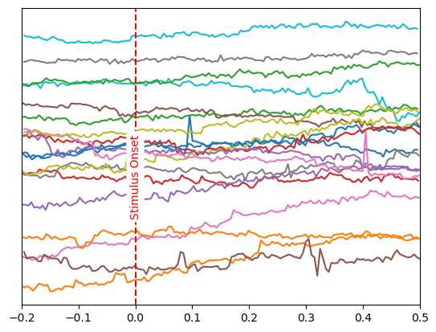
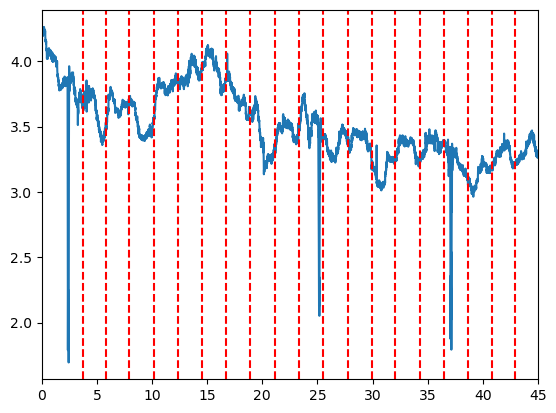
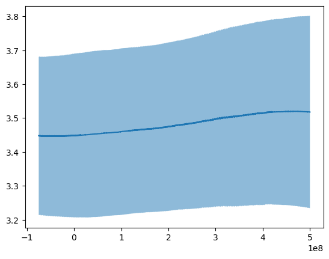
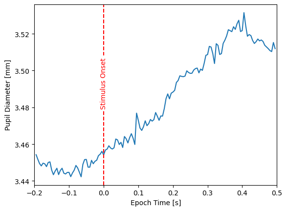

Tutorial: Processing Eye-Tracking Data with PyNeon#
Step 1: Loading Sample Data#
First, we’ll load sample eye-tracking data provided by PyNeon. In particular, we will download the
[1]:
import numpy as np
from pyneon import NeonRecording, get_sample_data
from pyneon.preprocess import *
import pathlib as path
get_sample_data("CircleFlash")
# Load the sample recording
recording_dir = path.Path(
r"C:\Users\jan-gabriel.hartel\Documents\GitHub\PyNeon\data\Timeseries Data + Scene Video\circleflash-e38cc9a4"
)
# check if the dir exists
recording = NeonRecording(recording_dir)
[2]:
import pyneon.epochs
from pyneon.epochs import events_to_times_df
# convert the events to a times dataframe
times_df = events_to_times_df(recording.events, t_before=0.2, t_after=0.5, t_unit="s")
# check the times_df
print(times_df.head())
# drop the first and last row
times_df = times_df.iloc[1:-1]
t_ref t_before t_after description
0 1737731728162000000 200000000.0 500000000.0 event
1 1737731733721022000 200000000.0 500000000.0 event
2 1737731735801775000 200000000.0 500000000.0 event
3 1737731737910627000 200000000.0 500000000.0 event
4 1737731740103648000 200000000.0 500000000.0 event
[3]:
# Creaate an Epoch with the times_df
epoch = pyneon.Epochs(recording.eye_states, times_df)
[4]:
print(epoch.data.columns)
Index(['pupil diameter left [mm]', 'pupil diameter right [mm]',
'eyeball center left x [mm]', 'eyeball center left y [mm]',
'eyeball center left z [mm]', 'eyeball center right x [mm]',
'eyeball center right y [mm]', 'eyeball center right z [mm]',
'optical axis left x', 'optical axis left y', 'optical axis left z',
'optical axis right x', 'optical axis right y', 'optical axis right z',
'epoch index', 'epoch time', 'epoch description'],
dtype='object')
[30]:
import matplotlib.pyplot as plt
# for each unique epoch index
for i in epoch.data["epoch index"].unique():
times = epoch.data[epoch.data["epoch index"] == i]["epoch time"].values / 1e9
pupil = (
epoch.data[epoch.data["epoch index"] == i]["pupil diameter left [mm]"].values
+ i / 10
)
# plot the times and pupil diameter
plt.plot(times, pupil)
# hide the y-axis labels
plt.yticks([])
plt.xlim(-0.2, 0.5)
plt.axvline(x=0, color="r", linestyle="--")
plt.text(
0,
4.0,
"Stimulus Onset",
color="r",
ha="center",
rotation=90,
bbox=dict(facecolor="white", edgecolor="none", boxstyle="round,pad=0.3"),
)
plt.show()

[37]:
# plot the unepoched data
times = (recording.eye_states.data.index - min(recording.eye_states.data.index)) / 1e9
# extract the events
event_times = recording.events.data.loc[
recording.events.data["name"] == "Gabor onset"
].index.values
event_times = (event_times - min(recording.eye_states.data.index)) / 1e9
plt.plot(times, recording.eye_states["pupil diameter left [mm]"].values)
plt.xlim(0, 45)
# draw a red vertical line at the event times
for event_time in event_times:
plt.axvline(x=event_time, color="r", linestyle="--")

[6]:
# sort by epoch time
epoch.data = epoch.data.sort_values(by=["epoch time"])
# average in a window of 0.01 seconds
pupil_mean = epoch.data["pupil diameter left [mm]"].rolling(window=500).mean()
# compite standard deviation
pupil_std = epoch.data["pupil diameter left [mm]"].rolling(window=500).std()
# plot the mean pupil diameter and standard deviation
plt.plot(epoch.data["epoch time"], pupil_mean, label="mean")
plt.fill_between(
epoch.data["epoch time"],
pupil_mean - pupil_std,
pupil_mean + pupil_std,
alpha=0.5,
label="std",
)
[6]:
<matplotlib.collections.PolyCollection at 0x2a9ad7d93a0>

[7]:
epochs_np = epoch.to_numpy()
---------------------------------------------------------------------------
ValueError Traceback (most recent call last)
Cell In[7], line 1
----> 1 epochs_np = epoch.to_numpy()
File ~\Documents\GitHub\PyNeon\pyneon\epochs.py:249, in Epochs.to_numpy(self, column_names)
220 """
221 Converts epochs into a 3D array with dimensions (n_epochs, n_channels, n_times).
222 Acts similarly as :meth:`mne.Epochs.get_data`.
(...)
246 - If `NaN` values are present after interpolation, they are noted in `nan_flag`.
247 """
248 if self.source_type != "stream" or self.is_uniformly_sampled is False:
--> 249 raise ValueError(
250 "The source must be a uniformly-sampled NeonStream to convert to NumPy array."
251 )
252 if not self.is_equal_length:
253 raise ValueError("Epochs must have equal length to convert to NumPy array.")
ValueError: The source must be a uniformly-sampled NeonStream to convert to NumPy array.
[8]:
epochs_interp = pyneon.Epochs(recording.eye_states.interpolate(), times_df)
epochs_interp_np, info = epochs_interp.to_numpy()
[17]:
# average across all epochs
pupil_mean = epochs_interp_np[:, 0, :].mean(axis=0)
# compute standard deviation
pupil_std = epochs_interp_np[:, 0, :].std(axis=0)
# plot the mean pupil diameter and standard deviation
plt.plot(info["epoch_times"], pupil_mean, label="mean")
plt.xlim(-0.2, 0.5)
# show a vertical line at 0
plt.axvline(x=0, color="r", linestyle="--")
plt.text(
0,
3.48,
"Stimulus Onset",
color="r",
ha="center",
rotation=90,
bbox=dict(facecolor="white", edgecolor="none", boxstyle="round,pad=0.3"),
)
# add x and y labels
plt.xlabel("Epoch Time [s]")
plt.ylabel("Pupil Diameter [mm]")
[17]:
Text(0, 0.5, 'Pupil Diameter [mm]')
